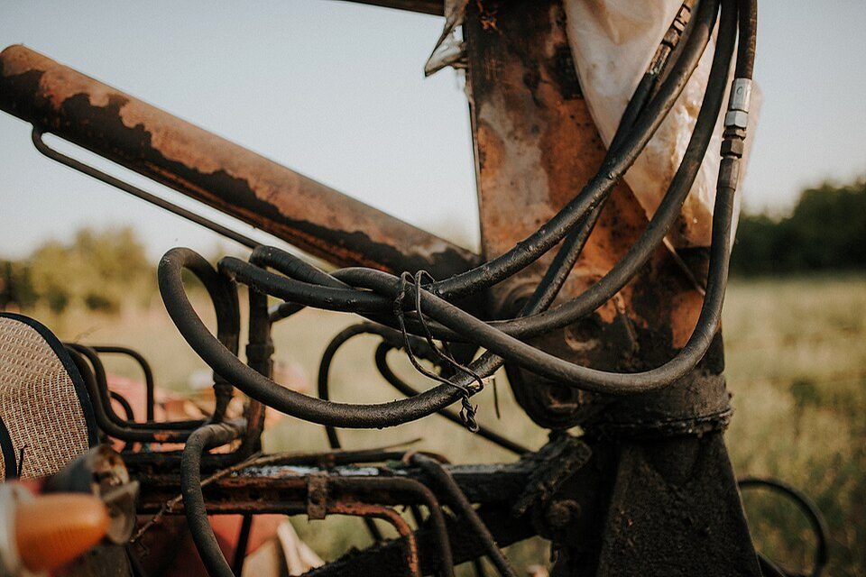
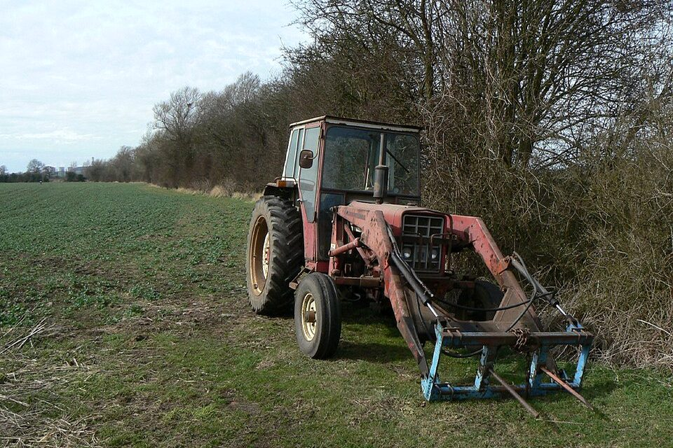
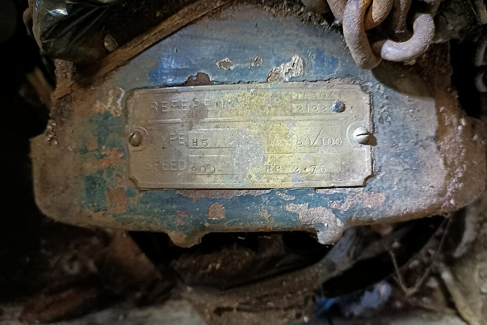

Serial is readable but not verified against bill of sale, service records, lien/title, or dealer records.
Report snapshot
Machine guessJohn Deere 5075E
82% confidence from plate pattern, body color, loader geometry, and decal family.
Serial / PINLV5075E7P0D18422
Readable in submitted plate photo; still must match bill of sale and lien/title paperwork.
Hour meter1,842 hrs
Readable dashboard image; service records requested to support usage claim.
Evidence sources6 photos + 1 video
Engine bay/cold-start proof is still missing.
Risk categories
Wet/dark streak near lift cylinder could indicate seepage, fresh grease, or recent service residue.
No engine bay / cold-start evidence. Missing proof increases uncertainty.
1,842h reading should be matched to service history and visible wear.
Ask for repair records, closeups, and a cold-start video before travel or deposit.
Evidence-linked findings

leak?
Finding 1
Hydraulic leak evidence
Dark wet streak pattern appears near the right lift cylinder. FarmFax does not certify the cause; it flags the area as buyer-relevant evidence.
Reasoning
Wet/dark signal is elevated at 14.8%, concentrated near hydraulic hardware. That pattern is more concerning than diffuse dirt because the location maps to a costly repair area.
Buyer action
Ask whether cylinder seals or hoses were replaced. Request a loader-cycle video and inspect again after warm-up.

rust paint
Finding 2
Moderate corrosion + paint mismatch
FarmFax sees moderate rust-tone clustering and elevated paint variance. This does not prove collision or structural repair; it creates a focused follow-up.
Reasoning
12.4% rust-tone pixels and paint variance of 46/100 are above the clean scenario baseline. The finding is tied to body/loader areas that affect resale and repair negotiation.
Buyer action
Request closeups after pressure wash. Ask about repaint, storm damage, welds, replaced panels, and loader-arm repair history.

PIN
Finding 3
Machine identity is anchored, not certified
The submitted serial/PIN plate is readable enough to anchor the report, but FarmFax has not checked lien, theft, title, service, or dealer records.
Reasoning
The plate pattern aligns with the make/model guess, but paperwork truth requires external records. FarmFax keeps this separate to avoid overclaiming.
Buyer action
Match the PIN to bill of sale, lien/title paperwork, dealer service records, and any auction lot metadata before payment.
video
Finding 4
Video adds context, not certainty
The short clip helps inspect motion/context, but FarmFax samples selected frames. It does not claim full-video inspection or audio diagnosis.
Reasoning
Video frames are useful when hydraulics, smoke, motion, or engine behavior matter. The report records frame count and worst-frame time rather than pretending every moment was checked.
Buyer action
Ask for a cold-start video, loader cycle, steering lock-to-lock, PTO engagement if relevant, and engine bay after 10 minutes of operation.
Seller questions generated from the evidence
Hydraulics
Can you provide service records for hydraulic hoses/cylinders in the last 24 months?
Paint / body
Has the right rear panel or loader arm ever been repainted, welded, or replaced?
Cold start
Can you send a cold-start video and a photo of the engine bay after 10 minutes of operation?
Evidence ledger
| View | Status | Signals | Reason this matters |
|---|---|---|---|
| 360° walkaround | review | Rust 12.4%, paint variance 46/100 | May affect resale, structural questions, and negotiation leverage. |
| Serial / PIN plate | received | Readable plate | Anchors report but still needs paperwork match. |
| Hour meter | received | 1,842h dashboard | Needs service-record match and wear plausibility check. |
| Hydraulic lines | review | Wet signal 14.8% | Potential costly repair; inspect before deposit. |
| Tires / tracks | received | Low wet/rust signal | Visible consumables look serviceable in submitted media. |
| Engine bay / cold start | missing | No evidence | FarmFax increases uncertainty instead of guessing. |
What this report will not claim
FarmFax is a screening aid. It is not a certified mechanic inspection, title/lien/theft search, appraisal, safety certification, warranty, repair estimate, or full-video inspection.
- Unknowns stay unknown.
- Missing views increase risk.
- Every finding should be verified by seller records, a mechanic, dealer records, or in-person inspection before payment.
Open record
This report is designed to export as JSON/PDF so the buyer can keep it, share it with a mechanic, attach it to a deal folder, or carry it into resale. Paid hosting can make sharing easier, but it should not own the underlying equipment record.